All’apertura del pannello “Parametri Lastra“ verrà visualizzata la schermata di parametri di lavorazione che consente all’operatore la gestione dei dati relativi alla lavorazione.
I dati di lavorazione possono essere impostati e modificati con il pannello dei parametri.

Gestione materiale selezionato
Nella parte superiore del pannello “parametri di lavorazione della lastra” sono presenti alcuni elementi che permettono di gestire i materiali:
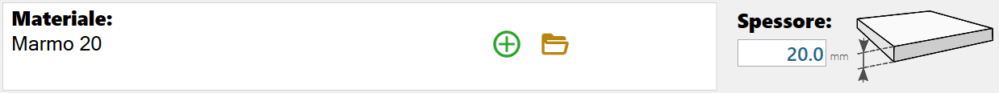
Vengono di seguito illustrati gli elementi che compongono questa sezione dei parametri di lavorazione della lastra
 | Materiale Selezionato |
 | Pulsante crea nuovo materiale |
Pulsante accedi al pannello Gestione Materiali | |
 | Spessore del materiale selezionato |
Aggiungi un nuovo materiale
Questa piccola finestra grafica permette di comporre il nome di un nuovo materiale:
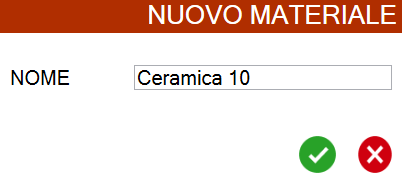
Se avviene la conferma di creazione del nuovo materiale, questo verrà automaticamente selezionato.
I parametri e lo spessore del materiale verranno aggiornati di conseguenza.
Apri il pannello gestione materiali
Da questo pannello è possibile gestire i materiali:
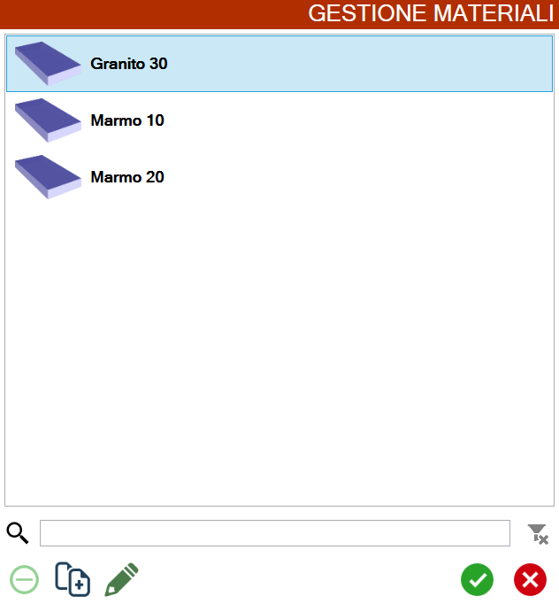
 | Barra di ricerca |
Rimuovi filtro | |
Rimuovi materiale | |
 | Duplica materiale |
 | Modifica materiale |
Selezione tipo lavorazione
La selezione del tipo di lavorazione regola il contenuto della finestra di gestione dei parametri.

Per ogni tipologia di lavorazione è visibile nella relativa anteprima la modalità di incremento scelta, la velocità di taglio in avanti (di affondo / ingresso nel caso di tipo lavorazione Foro) e il diametro dell’utensile.
Tipologia passate
Passata Piena | |
 | Passata a Step / a spirale |
Tipologia di lavorazioni
Lineare
Passata piena
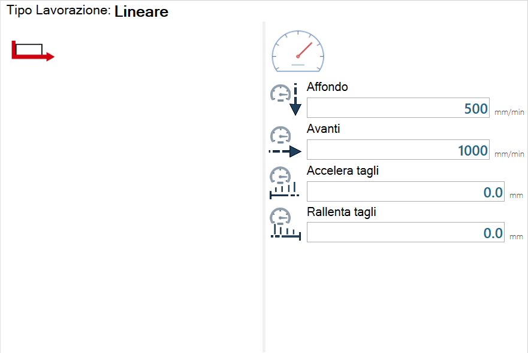
Passata a step
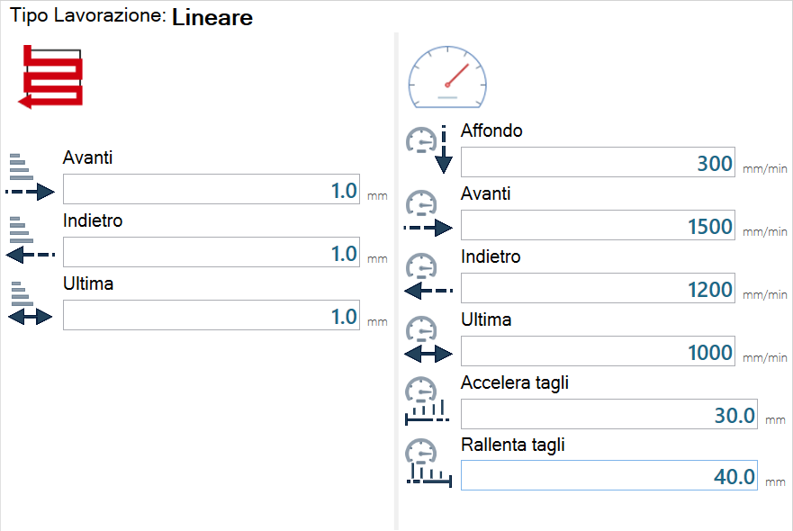
Descrizione parametri incrementi
 | Avanti |
 | Indietro |
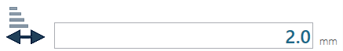 | Ultima |
Descrizione parametri velocità
 | Affondo |
 | Avanti |
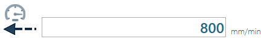 | Indietro |
Ultima | |
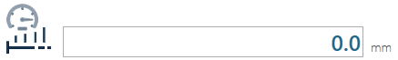 | Accelera tagli |
 | Rallenta tagli |
Per quanto riguarda gli incrementi e le velocità i parametri “Indietro” e “Ultima”, possono essere presenti oppure no o essere presente solo uno dei due.
Normalmente queste scelte vengono fatte al momento dell’installazione del programma e vengono decise in base alla lavorazione del cliente.
È possibile cambiare queste opzioni, in quanto si preferisce lavorare diversamente contattando l’Assistenza Donatoni.
Arco
Passata a step
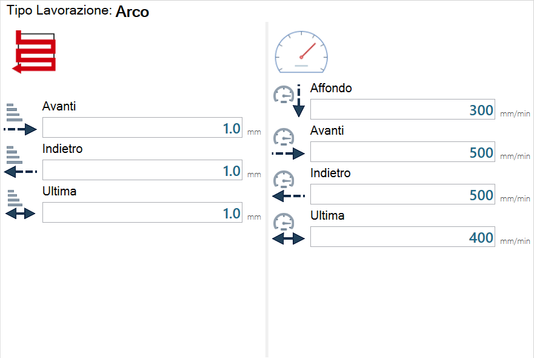
Inclinato
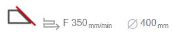
Passata piena

Passata a step

Descrizione parametri incrementi
 | Taglio con tastatura (attivato / disattivato) |
Fresatura

Passata Piena
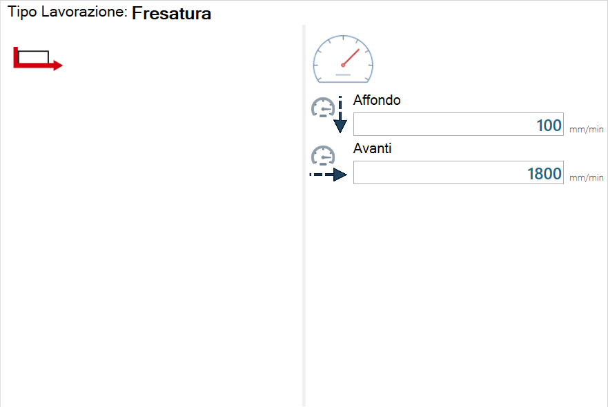
Passata a step e passata a spirale


Foro

Passata piena
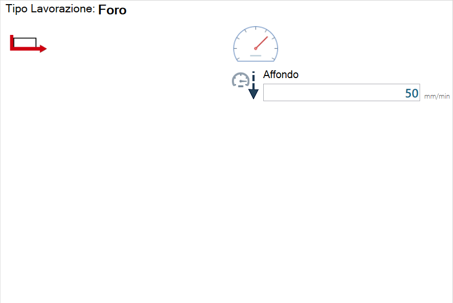
Passata a step

Esecuzione lavorazione con passata a step:
La macchina approccerà il materiale al massimo della velocità, fino al raggiungimento della distanza dal materiale specificata nel parametro AVVICINAMENTO.
Il numero di passi verrà calcolato come:
Spessore del materiale diviso spessore degli step
eventualmente arrotondato per eccesso
La macchina comincerà a muoversi a velocità di lavorazione.
Se il valore del parametro STEP INGRESSO è settato (diverso e maggiore di zero), la macchina lavorerà alla velocità settata nel secondo campo INGRESSO fino al raggiungimento della distanza settata nel campo STEP INGRESSO
La macchina eseguirà gli step calcolati al secondo punto alla velocità Step
Dopo ogni step (incluso il primo) la macchina tornerà a quota materiale a velocità massima, dopodiché ritornerà a massima velocità a breve distanza rispetto all’inizio dello step successivo.
Se il parametro STEP USCITA è impostato (diverso e maggiore di zero), la macchina lavorerà a velocità definita nel secondo campo STEP fino al raggiungimento della distanza definita nel primo campo USCITA
Il resto dello step verrà eseguito a velocità USCITA
Descrizione parametri Foro con passata a step
 | Quota di avvicinamento |
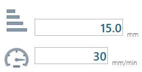 | Step |
 | Ingresso |
 | Uscita |
  | Pausa dopo |
Cambio parametri taglio
È possibile modificare i parametri precedentemente illustrati per il disco, la fresa e il foretto, se l’utente è abilitato ad usarli.

Per decidere di quale utensile modificare i parametri è necessario selezionarne uno tramite la pressione del pulsante visibile nella parte destra del pannello “Seleziona utensile“.
 | Cambia parametri di taglio |
Premendo questo pulsante verrà visualizzata una finestra che conterrà una configurazione di parametri salvata per ogni materiale presente. I risultati dipendono inoltre dal tipo lavorazione selezionato.
Verrà aperta una finestra “Cambio Parametri Taglio“ simile alla seguente immagine di esempio:

Nella parte inferiore sinistra del pannello “Cambio Parametri Taglio“ è presente una barra del testo inizialmente vuota che permette di applicare un filtro di ricerca.
Il pulsante a destra della barra si attiva solo nel momento in cui del testo è presente nella barra e quindi è applicato un filtro di ricerca. La sua pressione cancella il filtro e svuota la barra del testo.
Barra inferiore
La barra inferiore del pannello Parametri Lastra appare simile a questa:

Questa barra è costituita dai seguenti elementi:
 | Anteprima disco |
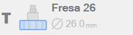 | Anteprima fresa/foro |
Pannello Utensile |